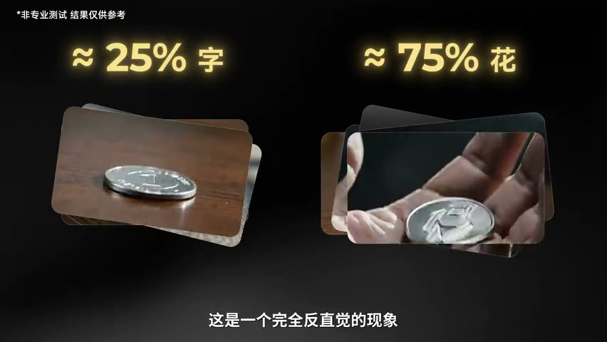

原视频 · 在线回看
点击后联网加载 B 站播放器；本地不下载整段视频。

原视频 · 在线回看
点击后联网加载 B 站播放器；本地不下载整段视频。
来源：在 AI 里抛硬币，概率是 50% 吗？｜UP 主：影视飓风｜时长：10 分 17 秒｜打开视频｜阅读强度：深度
一枚硬币被抛到空中，翻转几圈，落在桌上。金属反光、手指动作、落下时的碰撞都很像真实拍摄，我们自然会把现实中的经验带进去：正面和反面出现的机会，大致应该各占一半。那么，如果这段画面由 AI 生成，连续生成很多次，最后还会得到差不多的比例吗？这个看似简单的问题，恰好把“看起来真实”与“按照相应规则变化”分开了。
影视飓风团队使用相同提示词，在多个模型里进行了数百次生成尝试。他们报告，其中一组大约有 70% 的结果显示数字面；另一组画面标出了大约 25% 的字面与 75% 的花面。两组结果都没有接近直觉中的一半一半，而且偏向的方向还不相同。这是团队的一次非专业测试，适合用来提出问题，不能据此认定每个模型在所有设置下都具有相同偏差。
我们首先需要分清正在数什么。真实的抛硬币实验，涉及硬币的形状、初始朝向、抛出的力量、旋转和落地方式。把它近似看作公平硬币，还包含一个对实验条件的假设。视频生成任务则接收提示词及其他输入，输出一段画面。画面里出现一枚硬币，并不自动意味着生成过程已经模拟了现实中抛掷这枚硬币的全部条件。
即使生成过程使用了随机数，也只能说明结果中存在随机变化，不能推出所有可能结果都等概率。一个随机过程完全可以经常产生一种结果，较少产生另一种结果。我们点击按钮的时间不规律，也不会替模型规定“字面和花面必须各占一半”。因此，要判断某种性质是否成立，需要直接观察或检验那种性质，不能从“用了随机生成”跳到“这是一个公平的抛硬币器”。
有限次数的实验还有自然波动。即使真正在一个公平机制下独立重复，十次里也不保证刚好出现五次正面。实验记录的正面比例，是正面次数除以有效试验次数：
这里的 表示由这批结果估计出来的比例。它会受到样本量和抽样波动影响。若把试验建模为相同概率下的独立重复，还可以用二项分布方法描述估计的不确定程度；这一步依赖独立性等条件。NIST 的二项比例区间说明介绍了这种处理。
对生成视频，连“有效试验”都需要认真理解。硬币落下后若看不清、消失了，或者画面里的两面没有保持一致，就无法与清楚呈现某一面的结果完全一样地计数。我们关心的可能有两个问题：成功生成可辨认硬币的比例是多少，以及在能够辨认的结果里，两面各占多少。把它们混在一起，会让一个看起来简单的百分比承担过多含义。
训练数据是一个可能的解释。影视飓风提出，电影、广告和日常分享经常选择更容易被看清的硬币面作为落点。如果这类素材在训练数据里较多，生成模型就可能更常产生类似画面。这个解释帮助我们理解数据分布如何影响输出，但仅凭某一面的比例较高，还不能确定偏差一定由这一个因素造成。提示词、输入画面、生成设置和结果判定方式，也可能改变观察到的比例。
重要的是理解其中的学习任务。模型从许多画面中学习什么样的硬币、手势、光线和运动比较常见，再据此产生新的画面。只要观看体验足够像，我们就容易把其他性质也一并想象进去：硬币质量正确、两面面积相等、碰撞遵守相同条件、长期频率接近现实。实际上，这些性质需要分别检查。外观的一致，不会自动保证每一项运动和统计关系也一致。
视觉生成还有计算成本方面的困难。生成更多高质量画面，需要持续投入计算资源；如果只为了改变观察角度，又要重新生成一段内容，前后物体的位置、样子和关系也可能发生变化。于是，影像创作者会提出进一步的愿望：能否生成一个相对稳定的空间，让我们继续在里面观察、移动和操作，而不只拿到一段已经排好的画面？
中世纪堡垒的例子就是这种愿望的直观入口。输入对光线、大理石地板和遗迹物体的描述后，得到一个可以从不同位置观看的场景。镜头能够绕行、俯冲，观察原先视角没有覆盖的部分。对于影像制作，重要变化是场景和观察视角开始能够分开处理：空间保留下来，镜头可以继续选择去哪里看。
不过，能够在空间里移动视角，与物体拥有正确的物理行为，仍需分别理解。一座看起来稳定的堡垒可以有良好的几何结构，但这并没有回答石块掉落时怎样碰撞、物体能否被推动。三维场景解决了一部分空间一致性问题；预测动作引起什么变化，还需要关于变化规律的模型。把这两件事拆开，才容易理解“世界模型”希望进一步处理什么。
世界模型的一种核心用途，是根据当前状态和将要采取的动作，预测接下来可能发生的变化。以抛硬币为例，当前状态包括硬币在哪里、处于怎样的姿态；动作是手以某种方式将它抛出；预测则涉及它接下来可能到达哪里、怎样旋转和落下。模型可以对多个可能动作或未来结果进行估计，决策系统再利用这些估计选择行动。
这是一种对功能的解释，并不要求每个世界模型都显式写出硬币质量、摩擦系数和全部物理方程，也不意味着冠以这个名称的系统已经理解所有物理规律。不同研究会采用不同表示和任务范围。Ha 与 Schmidhuber 的 World Models 研究就在特定游戏环境里学习环境变化，并研究在模型生成的环境中训练行动策略。模型能帮助选择动作，是可以具体研究的能力；对任意场景都预测正确，则是范围更大的要求。
编辑现成影像时，我们还希望保留一部分内容，同时改变另一部分：正在讲话的人保持在画面里，背景可以变化，桌子的样子可以变化，手里拿着的物体也可以变化。困难在于修改之后，人物动作和新物体之间还需要看起来衔接自然。手仍然应该接触桌面，透明物体和流体也应该与周围画面形成合理关系。这些编辑能力改善的是创作者对画面内容的控制。
如果把这种写实程度与前面可移动视角的空间结合，就会得到一个很吸引人的设想：先得到一个动态场景，再自由选择如何拍摄它。人物和物体继续发生变化，我们可以绕到另一边、靠近一个细节，或者重新选择镜头。这里的“如果”十分重要。能够编辑二维影像、能够探索三维场景，以及能够预测物体变化，是相互有关的能力，但演示其中一项不能保证其他几项都已经完成。
这样的设想之所以让影像创作者兴奋，是因为它改变了观看与拍摄的关系。普通电影已经替观众安排好了视角；一个能够探索的动态场景，则可能让观众自己决定看谁、站在哪里。要实现这种体验，光有漂亮的一帧不够，还需要不同时间、不同位置看到的内容保持连贯。
影视飓风介绍过一次更具体的制作实践：使用 250 台相机拍摄真实演员和场景，再通过计算重建，制作一部约 35 分钟的 VR 短片。团队把这种技术称为 4D 高斯。这里可以先把“4D”理解为三维空间加上时间：人物会运动，我们也希望从不同位置观看他们的运动。
普通录像记录一个相机随时间看到的画面。多机位重建则利用许多观察角度，尝试恢复动态场景的空间表示，再从新的视角渲染影像。观众因此可以把视线从前方人物移开，去看旁边的角落，也可以改变观察位置。关于动态场景怎样以高斯表示并渲染，可以进一步阅读 4D Gaussian Splatting 研究；具体影片采用哪些实现细节，不能仅由技术名称推定。
这段体验确实接近“走进正在发生的场景”，但其中事件先由演员真实表演，再通过多台相机记录和重建。它说明动态影像可以摆脱单一固定视角，并没有证明系统能够凭一句提示词预测任意新事件。重建已经发生的动作，与预测从未发生过的动作，需要解决的问题不同。保留这个区别，既能看见现有技术的价值，也不会把未来愿望提前算作已经完成的能力。
| 能力 | 它主要改变了什么 | 仍然需要另外回答的问题 |
|---|---|---|
| 生成或编辑视频 | 产生一段画面，修改其中的内容。 | 运动与长期统计规律是否可靠？ |
| 生成可探索场景 | 允许从不同位置观察空间。 | 物体受力和交互后怎样变化？ |
| 多机位动态重建 | 从多个角度观看已拍摄的动态事件。 | 能否预测没有记录过的新动作？ |
| 动作条件下的世界预测 | 根据状态与动作估计后续变化。 | 在哪些环境、哪些动作范围内预测有效？ |
对游戏来说，能够继续生成并维持一个可交互世界，意味着玩家的选择可能带来更多变化。对机器人来说，重点更直接：它能否在行动之前，估计杯子会不会倒、身体是否会失去平衡。假如一个模拟环境足够接近实际任务，机器人就有机会在其中反复尝试，减少每次都必须在现实中摔倒、碰撞的成本。
这里的价值来自可以试验和获得反馈，但前提仍然是模拟环境对相关动作足够可靠。机器人在模拟里学会了某种做法，现实的重量、接触、摩擦和感知误差稍有不同，都可能影响效果。因此，从虚拟练习走到现实使用，还需要检验迁移。一个非常漂亮的场景，如果给出了错误的碰撞关系，并不能仅靠外观帮助机器人安全行动。
回到开头的硬币，我们真正关心的问题已经清楚了：生成器是否保留了这个任务需要的规律。即使未来某个系统生成的两面比例更接近一半，也还要看它是否正确处理了不同初始条件。反过来，一个经过可靠设计的物理模型，在特定抛法下也不必承诺所有情境都精确 50%。公平比例、合理运动和逼真外观，是可以相关却需要分别判断的性质。理解这个区别，比仅仅记住“世界模型会更真实”更有用。
随机生成不保证所有结果等概率。AI 抛硬币的结果比例，要结合输入、样本量和结果判定理解；看起来真实的画面，也需要单独检查运动与统计规律。
可探索空间、动态重建和动作预测分别解决不同问题。能换视角证明了一部分空间能力，不能直接替代对物理变化的验证。
世界模型有望帮助创作、游戏和机器人试验，但可靠性取决于具体任务。未来设想应与已经展示的能力分开理解。
一个生成过程使用随机数，为什么还不能推出硬币两面等概率？
可以从不同角度看一段动态场景，与能够预测一个新动作的后果，差别在哪里？
如果一个模型生成的硬币恰好各有一半正面反面，这是否足以说明它掌握了抛硬币的物理规律？